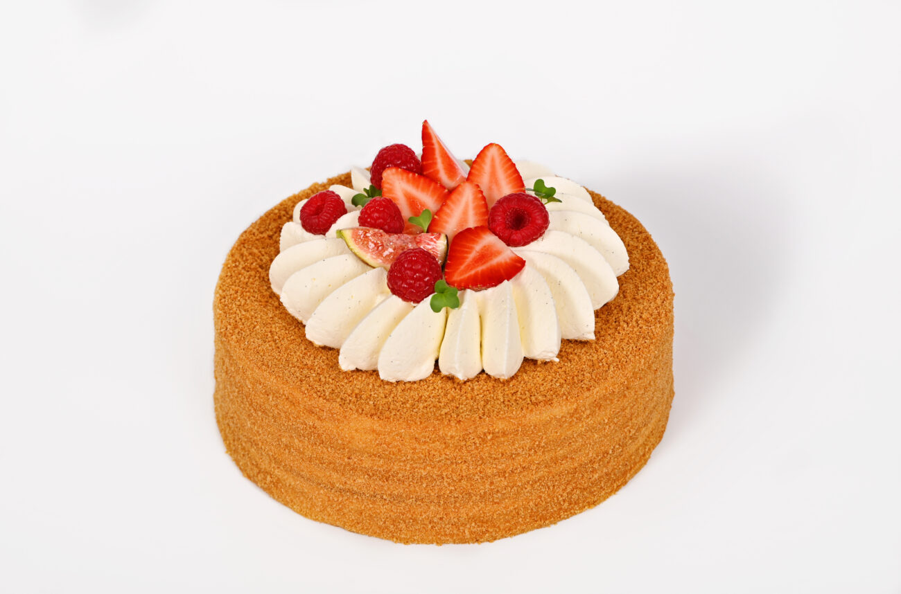
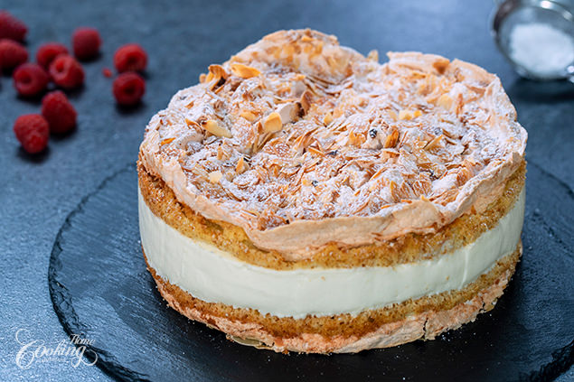

A basic flour mixture serves as the foundation for sweet and rich cakes and what are known as little cakes, called cookies, and their savory cousins being quick-breads and yeast breads. Basic ingredients for made-from-scratch cake recipes often include flour, sweetener (sugar), fat (butter, vegetable oil), liquid (milk), leavening agent (steam, beaten eggs, baking powder and/or baking soda), and flavorings (salt, vanilla extract). Cakes can also be purchased ready-made or baked with packaged mixes that come ready to be combined with water, eggs and vegetable oil. Cakes lend themselves to limitless variations depending on the proportion of their ingredients, the way they are mixed, flavorings added to the basic ingredients, the shapes of the pans used in baking, and cooling and storing methods. Any number of fillings, frosting and final decorations can be chosen to make every cake unique and an artistic expression of its maker.
 